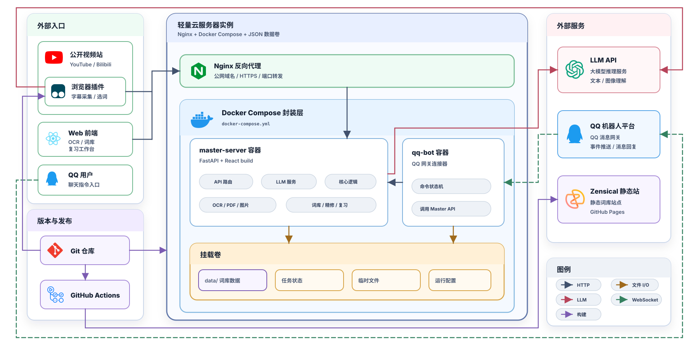
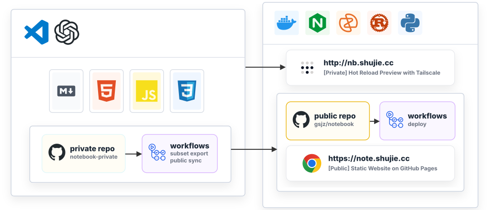

Sergio Gao
记录学术笔记与技术实践的个人知识库（迁移重构中）
基于 Link-ual Log 构建的个人词典
三端采集、词条结构与复习调度打通了从记录到回顾的完整词汇工作流。

通过子集导出 workflow 分离私有仓库与公开仓库，串起本地编写、热重载预览和同步发布。

围绕私有服务入口、主机维护与运维自动化的方案整理。
对 Pisano 周期相关内容做了结构重写，并补充了数学证明表达。